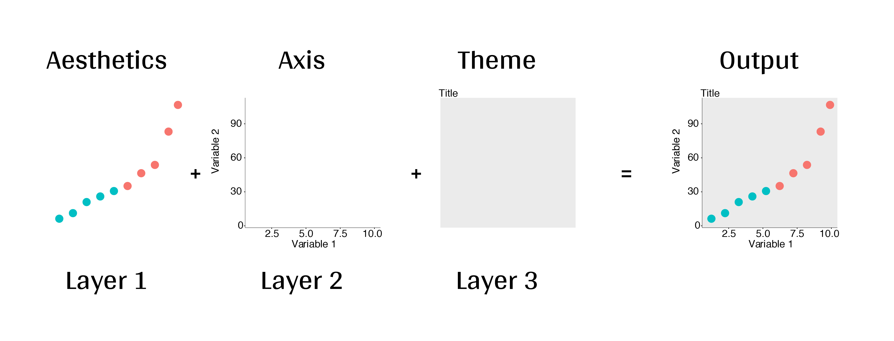
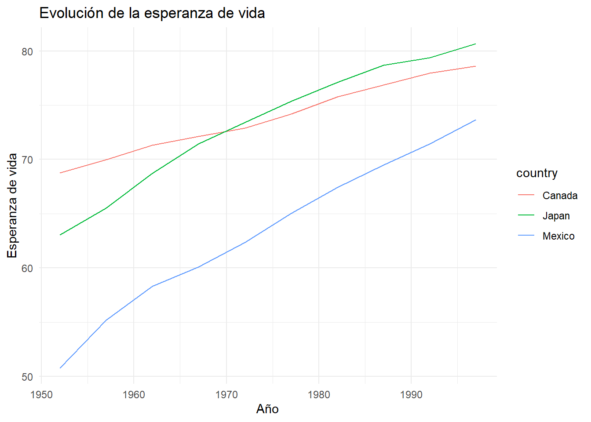

¡Empecemos por lo básico! El paquete ggplot2 se basa en la Gramática de los Gráficos (GG), que es un marco para la visualización de datos que disecciona cada componente de un gráfico en componentes individuales, creando capas distintas. Utilizando el sistema GG, podemos construir gráficos paso a paso para obtener resultados flexibles y personalizables.

Las capas GG tienen nombres específicos que verás a lo largo de esta seccion:
Para hacer un ggplot, las capas de datos y mapas son requisitos básicos, mientras que las otras capas son para personalización adicional. Las capas que «no son necesarias» siguen siendo importantes, pero podrás generar un gráfico básico sin ellas.
4.1Desglose de las capas comunes
A continuación se presenta un desglose de cada una de las capas de la GG y los argumentos comunes de cada una de ellas que pueden servir de referencia:
Datos:
sus datos, en formato tidy o dataframe, proporcionarán los ingredientes para su trazado
utilice las técnicas dplyr para preparar los datos para un formato de trazado óptimo
por lo general, esto significa que debe tener una fila por cada observación que desea trazar
Estética(Aesthetics / aes), para hacer visibles los datos
x, y: variable a lo largo de los ejes x e y.
colour: color de las variables según los datos.
fill: color interior de la zona o relleno.
group: a qué grupo pertenece una geom.
shape: la figura utilizada para trazar un punto.
linetype: tipo de línea utilizada (sólida, discontinua, etc.).
4.1.1 Paso 7. Integrar todo y generar un script y funcion
Code
# paqueteslibrary(dplyr)
Attaching package: 'dplyr'
The following objects are masked from 'package:stats':
filter, lag
The following objects are masked from 'package:base':
intersect, setdiff, setequal, union
Code
library(ggplot2)library(gapminder)# Funcion para analizar la esperanza de vidaanalizar_esperanza_vida <-function(paises =NULL, anio_inicio =NULL, anio_fin =NULL) {# Filtrar por países (si se especifican) datos_filtrados <- gapminder %>%# Verificar Si los paises estan en el datasetfilter(if (!is.null(paises)) {message("Extraer informacion del pais")# entonces country %in% paises } else {# Se da un TRUE, cuando no tenemos el pais en los datos. Lo que significa que no se realiza ningún filtrado, y se mantienen todos los países.warning("No se encuentra el pais")TRUE }) %>%# Verificar que existe el year de iniciofilter(if (!is.null(anio_inicio)) {message("Extraer informacion del pais")# entonces year >= anio_inicio } else {# Se da un TRUE, cuando no tenemos el ano en los datos. Lo que significa que no se realiza ningún filtrado, y se mantienen todos los anos.warning("No se encuentra el pais")TRUE }) %>%# Verificar que existe el year de finfilter(if (!is.null(anio_fin)) {message("Extraer informacion del pais")# entonces year <= anio_fin } else {# Se da un TRUE, cuando no tenemos el pais en los datos. Lo que significa que no se realiza ningún filtrado, y se mantienen todos los países.warning("No se encuentra el pais")TRUE })# Verificar si hay datos después de filtrarif (nrow(datos_filtrados) ==0) {stop("No hay datos disponibles para los criterios especificados.") }# Resumen de la esperanza de vida resumen_vida <- datos_filtrados %>%group_by(country) %>%summarise(esperanza_media =mean(lifeExp),max_esperanza =max(lifeExp),min_esperanza =min(lifeExp)) %>%arrange(desc(esperanza_media))print("Resumen de la esperanza de vida:")print(resumen_vida)# Gráfico de esperanza de vida a lo largo del tiempoggplot(datos_filtrados, aes(x = year, y = lifeExp, color = country)) +geom_line() +labs(title ="Evolución de la esperanza de vida",x ="Año",y ="Esperanza de vida") +theme_minimal()}
Ejecuta el script:
Code
# Uso de la función con un ejemploanalizar_esperanza_vida(paises =c("Mexico", "Canada", "Japan"), anio_inicio =1950, anio_fin =2000)
Extraer informacion del pais
Extraer informacion del pais
Extraer informacion del pais
[1] "Resumen de la esperanza de vida:"
# A tibble: 3 × 4
country esperanza_media max_esperanza min_esperanza
<fct> <dbl> <dbl> <dbl>
1 Canada 73.8 78.6 68.8
2 Japan 73.3 80.7 63.0
3 Mexico 63.4 73.7 50.8

Ejercicio 2 (20 min)
Te invitamos a que corras el ejercicio propuesto en el script ggplo2_R_Ladies_Morelia_.R por Fernanda Miron.